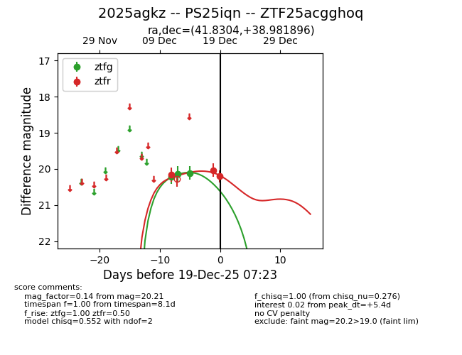
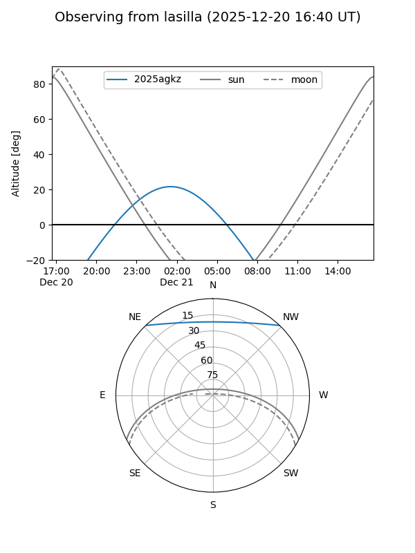
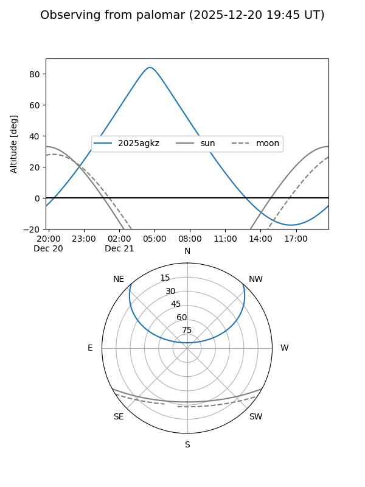
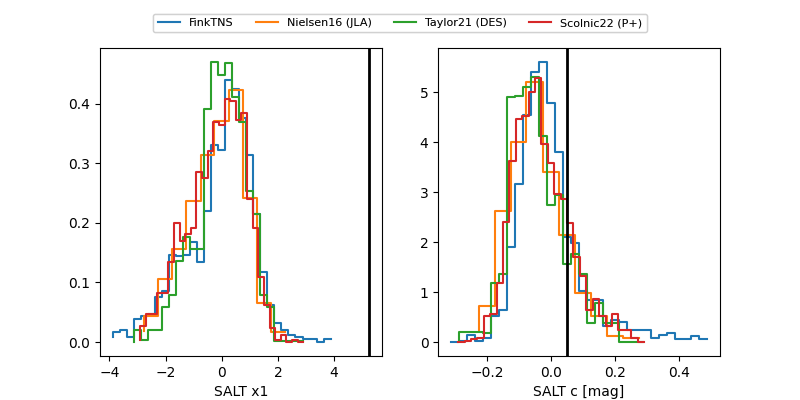

2025agkz
Target 2025agkz at 2025-12-20 05:39
Aliases and brokers:
FINK: fink-portal.org/ZTF25acgghoq
Lasair: lasair-ztf.lsst.ac.uk/objects/ZTF25acgghoq
ALeRCE: alerce.online/object/ZTF25acgghoq
TNS: wis-tns.org/object/2025agkz
YSE: ziggy.ucolick.org/yse/transient_detail/2025agkz
alt names
ZTF25acgghoq (ztf,fink_ztf)
2025agkz (tns,yse)
PS25iqn (panstarrs)
Coordinates:
equatorial (ra, dec) = 41.8304,+38.98190
equatorial (HMS+DMS) = 02:47:19.29,+38:58:54.83
galactic (l, b) = (146.3346,-18.56670)
Flags:
Photometry:
last ztfg=20.21, ztfr=19.97
4 ztfg, 4 ztfr detections
Lightcurve

Visibility


Additional plots
